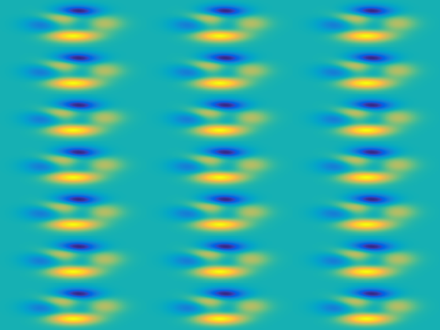
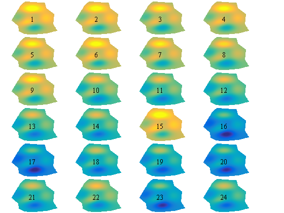
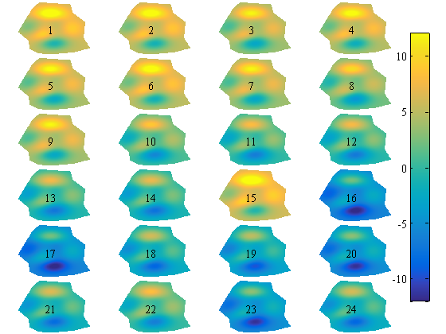
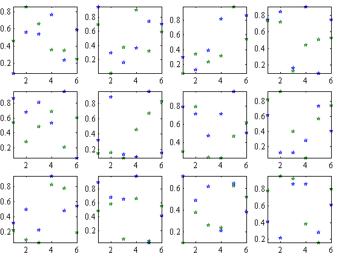

smplot documentation
This function creates axes in tiled positions. It is similar to subplot, but uses the entire figure window with no space between subplots. The name smplot is used to invoke "Small Multiples" which are touted by Tufte.
Contents
Syntax
smplot(rows,cols,p) smplot(...,Edge,MarginWidth) smplot(...,'axis','on') h = smplot(...)
Description
smplot(rows,cols,p) breaks the figure window into a rows-by-|cols| matrix of small axes and selects the p-th axes for the current plot. This is the same as calling subplot(m,n,p), except that smplot does not put any space between axes.
smplot(...,Edge,MarginWidth) leaves empty space on one or more sides of the figure, such as for a colorbar. Edge can be 'left', 'right', 'top', or 'bottom'. MarginWidth is the fraction of the figure's width or height to leave empty. For example, smplot(3,4,1,'right',0.2,'bottom',0.5) breaks the figure into 3-by-4 axes with 20% of the figure width left empty on the right-hand edge and the bottom half of the figure left empty.
smplot(...,'axis','on') inserts room between subplots for axis labels. Default is 'axis','off'.
h = smplot(...) returns a handle of the new axes.
Example 1: Tight subplots
Here's a 7-by-3 set of small multiples that fill the entire figure window:
for k = 1:21 smplot(7,3,k) imagesc(peaks(300)) axis off end
close
Example 2: Sharing a colorbar
Sometimes we want to see a gridded field as it changes over time. Given 24 snapshots of a gridded field we'll arrange them in a 6-by-4 grid. Start by creating some example data:
% Create some example data:
[X,Y,Z] = peaks(300);
xv=[-66,-104,-151,-193,-133,-125,-75,-6,133,234,196,204,132,117]/100;
yv=[276,220,89,-38,-134,-222,-268,-280,-259,-213,-104,66,162,252]/100;
in = inpolygon(X,Y,xv,yv);
Z(~in) = NaN;
Now plot all 24 datasets in a 6-by-4 grid with smplot(6,4,.... We'll leave 10% of the figure width on the right-hand-side empty so we can put a colorbar there. That extra space on the right-hand-side is obtained by 'right',0.1.
For clarity, I'm using http://www.mathworks.com/matlabcentral/fileexchange/42114-ntitle |ntitle> to label each plot. All subplots will share the same colorbar, so be sure to set the same values of caxis for each subplot.
% Plot 24 datasets: for k = 1:24 smplot(6,4,k,'right',0.1) pcolor(X,Y,Z+3*randn(1)+3*sin(k/4)) shading flat ntitle(num2str(k),'location','center'); caxis([-12 12]) axis off end
Now place a colorbar:
cb = colorbar('east'); set(cb,'Position',[0.92 0.1 0.04 0.8])
close
Example 3: Leave room for axis labels
If you want a little bit of room for axis labels between each subplot, specify 'axis', 'on' when you call smplot:
for k = 1:12 smplot(3,4,k,'axis','on') plot(rand(6,2),'p'); axis tight end
Author Info
This function was written by Chad A. Greene of the University of Texas at Austin's Institute for Geophysics (UTIG), September 2015.